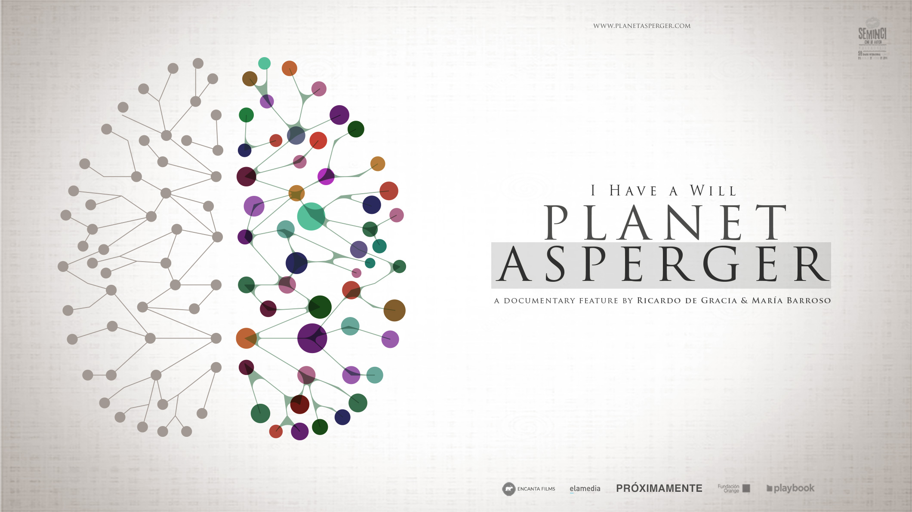

Apoyar – Educar – Incluir

...

...
...

Luego de dos exitosos años en el trabajo en nuestros talleres"Teatro" y "Manos Creando", teniendo ambos por objetivo el entregar herramientas para el desarrollo de habilidades sociales en niños y adolescentes con condiciones del espectro autista a través del arte, estamos próximos a iniciar la tercera versión. Mientras los niños y adolescentes permanecen en sus talleres, sus padres participan del Grupo de Apoyo Familiar, que busca brindar contención y herramientas para el trabajo en el
Por Lorena Díaz Puratic Fundación Asperger Chile En cinco años, hemos hecho un progreso lento, pero constante en el conocimiento sobre las condiciones del espectro autista. La palabra Asperger que hasta hace poco era totalmente desconocida, despertando el temor de padres y profesionales de la Educación, ya está en el inconsciente colectivo de los chilenos. Sin embargo, conocer, verbo tan general, tan poco apropiado para la medición y la precisión que el tema requiere, hace mucho tiemp

Querido Jorgito: Desde el momento que te tomé por primera vez en mis brazos supe que ibas a ser un niño muy especial, querido, esperado y por sobre todo, mi niño. Con el paso del tiempo fuiste creciendo, y como todo niño te fuiste enfrentando a los desafíos que te colocaba la vida casi sin darte cuenta. Te demoraste en decir tus primeras palabras, te era difícil hacer amigos, costaba que te entendiéramos, pero lo que nunca faltaba... era una sonrisa tuya, llena de amor. Es difíci